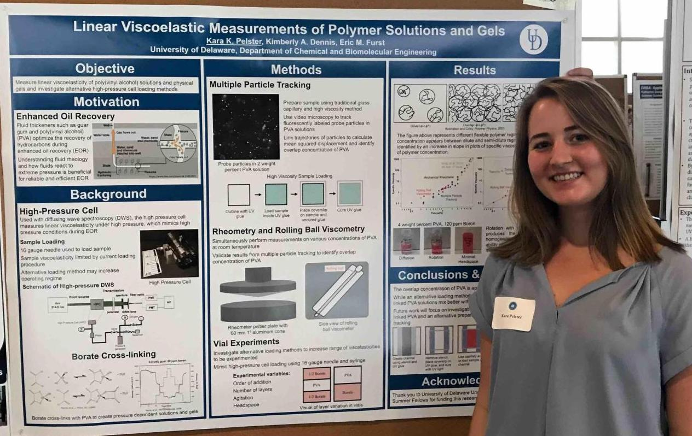
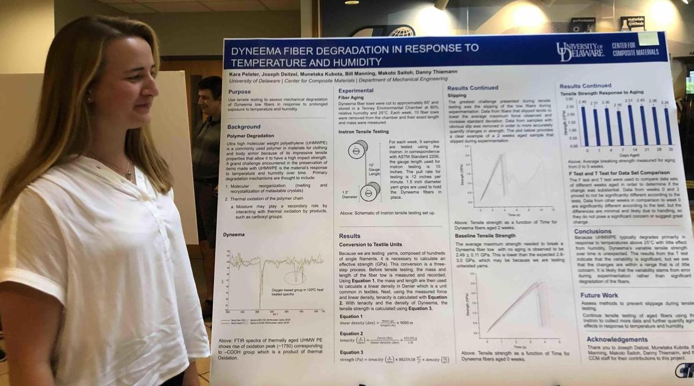
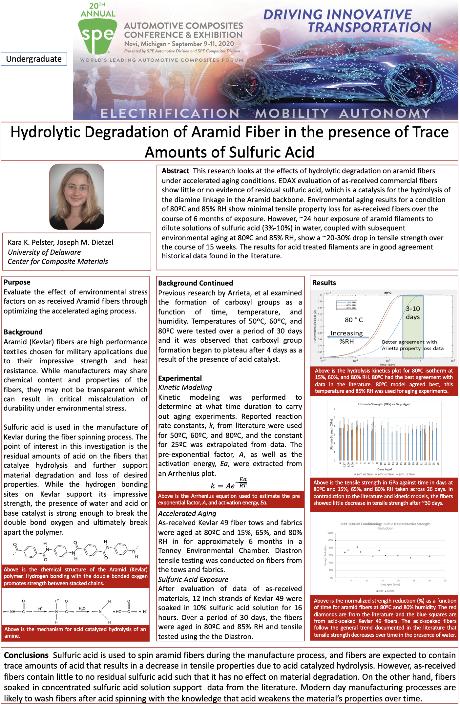

In the spring and summer of 2018, I investigated viscoelastic
properties of polymer gels
under high pressure for the University of Delaware Department of Chemical Engineering. I
prepared and ran experiments to measure properties of the gels.
Important experimental skills I learned were multiple particle tracking, rolling ball viscometry
and rheometry, and general lab preparatory work. I presented my work at the end of the summer
at the University of Delaware Summer Scholar research symposium. Viewable content for this work
is not available other than this image.

In the summer of 2019, for the University of Delaware Center
for Composite Materials,
I conducted research on the effect of environmental factors
on the aging of Kevlar fibers. My contribution was largely in the prepartion of the
experiments and in the analysis of experimental data. I also wrote MATLAB programs to analyze
tensile tests. I presented my research at an end-of-summer research symposium. Viewable content
for this work is not available other than this image.

In 2019 and the beginning of 2020, I participated in research
on the response of Kevlar fibers
to sulfuric acid and enironmental factors. The work was conducted for the University of Delaware
Center for Composite materials.
In addition to my contribution being prepare and run experiments, I helped to rewrite MATLAB
analysis code to be used not only in this
particular research, but in other similar research projects. I presented my work to the
Automotive Composites Conference
and Expedition. The Conference was in the August of 2020, so I presented virtually due to the
Covid-19 Pandemic. I was awarded
first place in the Undergraduate Category. Viewable content for this work is not available other
than this image.